Šeme knjiženja
Šeme knjiženja koriste se za automatizaciju knjiženja. Ideja šema za knjiženje zasnovana je na činjenici da se najveći dio faktura i izvoda evidentira na sličan, a često i identičan, način po unaprijed određenoj šemi. Sinergis, zbog svog načina na koji je izgrađen, dodatno povećava mogućnosti kreiranja šema knjiženja. Šeme knjiženja značajno ubrzavaju rad računovođama, omogućavajući knjiženja velikog broja finansijskih transakcija u vrlo kratkom vremenu. No, hajde da pođemo od početka. Osnovne preduslovi za kreiranje šema za knjiženje su poznavanje:
- dokumenta (na kome je zasnovana ekonomska promjena u Sinergisu),
- forme ulaznih i izlaznih faktura,
- forme izvoda,
- kontiranja.
Dokument
Sinergis, koristi unaprijed definisane tipove dokumenta, od kojih svaki predstavlja određenu vrstu poslovnog događaja. Ovi dokumenti, između ostalog, služe i kao šabloni za kreiranje faktura a uključuju ulazne fakture troškova, ulazne fakture za robu, avansne ulazne fakture, izlazne fakture robe, izvode itd. Svaki dokument ima unaprijed definisana pravila upotrebe, što omogućava automatizovano, dosljedno i tačno finansijsko praćenje transakcija.
Svaki dokument ima svoju brojčanu šifru, svoj naziv, svoje osobine, utiče na određene dijelove aplikacije, na razne finansijske aspekte (glavnu knjigu, KIF-KUF, kalkulacije i sl.). Razumijevanje dokumenata na kojima je zasnovana aplikacija je ključno za potpuno razumijevanja aplikacije.
Kada je evidentiranje faktura u pitanju, najčešća je situacija da radimo sa fakturama kojima se fakturiše materijal i roba, trošak ili usluge, avansna faktura za dati avans ili storno avansne fakture (kod odustajanja ili izdavanja konačne fakture), knjižno odobrenje i sl. Izvodi su drugačiji.
Sinergis je sve ove situacije obuhvatio putem dokumenata. Pa tako, imamo:
| Šifra | Naziv dokumenta | Opis |
|---|---|---|
| 6 | Kalkulacija | Za primljene fakture nabavke robe |
| 20 | Trošak | Za primljene fakture troškova |
| 310 | Avansna faktura | Za primljene avanse |
| 18 | Knjižno odobrenje | Za primljeno knjižno odobrenje |
| 4 | Faktura-Otpremnica | Za izdate fakture |
| 17 | Knjižno odobrenje | Za dato knjižno odobrenje |
| 305 | Izvod banke - Uplata | Knjiženje po primljenom izvodu |
| 306 | Izvod banke - Isplata | Knjiženje po primljenom izvodu |
Ovo su samo neki dokumenti u Sinergisu koji se najčešće koriste u računovodstvu, a svi oni omogućavaju kreiranja šema knjiženja. Broj dokumenata koji “ciljaju” određenu vrstu specifične ekonomske transakcije je sve veći, pa su tako ostale samo izuzetno rijetke ekonomske transakcije koje nisu obuhvaćene ovim pristupom.
Forma ulaznih i izlaznih faktura
Za kreiranje šema za knjiženje, neophodno je poznavanje načina na koji se evidentiraju ulazne I izlazne fakture. Pored toga što sve ove fakture imaju svoj određeni dokument (koji im definiše ponašanje), sve fakture imaju i druge svoje specifičnosti. Često su te specifičnosti odraz drugih zavisnih informacija i podešavanja aplikacije (specifičnosti dobavljača ili kupca: entitet dobavljača – inostrani dobavljač, PDV obveznik ili ne i sl.), organizaciona jedinica kojoj pripada, način plaćanja i sl.). Pošto je broj različitih mogućnosti prilično veliki, u navedenim primjerima ćemo objasniti najčešće oblike faktura.
Forma izvoda
Za izvode vrijede pravila koja vrijede i za fakture, uz dodatak da pored ručnih unošenja izvoda, postoji mogućnost importa izvoda od strane banaka, pa onda još i kreiranja šema knjiženja za te izvode, što uz dobre šeme knjiženja, omogućava knjiženje velikog broja izvoda u kratkom periodu.
Kontiranje
Pored poznavanja sistema dokumenata i načina na koji se unose fakture i izvodi, za osmišljavanje i kreiranje šema za knjiženje potrebno je poznavanje samih računovodstvenih pravila knjiženja. Bez poznavanja kako se evidentiraju promjene: kako se knjiži obaveza ili potraživanje po fakturi, kako se evidentira prihod ili rashod, kako se za PDV korisnike knjiži ulazni ili izlazni PDV, kako se evidentiraju dobavljači i kupci iz različitih entiteta ili inostranstva, kako se knjiži izvod (uplata ili isplata), nećete biti u mogućnosti napraviti sami šeme knjiženja, nećete moći testirati šeme knjiženja, a nećete biti u stanju ni pregledati automaski kreirana knjiženja kako bi u njima eventualno uočili određene greške prilikom unošenja faktura ili kreiranja samih šema.
Testiranje šema za knjiženje
Sinergis je radi lakšeg osmišljavanja šema knjiženja omogućio da za svaku šemu knjiženja koju osmišljavate, učitate odgovarajuću fakturu i da prilikom kreiranja šeme knjiženja momentalno vidite kako će izgledati knjiženje takve fakture. S tim, da uvijek morate biti obazrivi i svjesni činjenice da ako vam šema knjiženja za tu fakturu izgleda ispravno, možda ta šema nije sveobuhvatna i potpuno tačna. Jer šema knjiženja nije ništa nego šablon po kome program treba da vrši knjiženja, odnosno da zadužuje i razdužuje određene konta. Šablon treba da radi ne samo u pojedinačnim slučajevima, već uvijek. O tome kako se vrši testiranje šeme za knjiženje, objasnićemo u primjerima koji slijede.
Šema za knjiženje fakture troškova (ulaz)
Sva pravna lica, kojih se autor ovog uputstva mogao sjetiti, imaju ulazne fakture troškova. Ulaznom fakturom troškova obuhvaćeni su najčešće: trošak struje, vode, goriva, telefona, interneta, kancelarijskog materijala, materijala za popravke, troškovi za advokatske ili računovodstvene usluge i mnogi drugi troškovi. Fakture troškova se kreiraju iz menija Nabavke i podmenija Fakture troškova.
U ovom primjeru ćemo da vidimo kako bi izgledala šema knjiženja za nabavku goriva. Koristićemo fakturu goriva koju smo ranije unijeli.
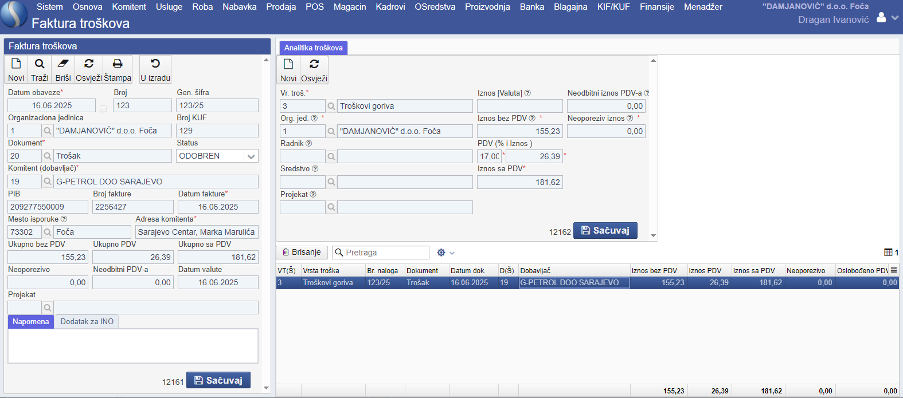
Primjećujemo na lijevoj strani da je u pitanju dokument 20 - Trošak i vidimo osnovne podatke o računu. Na desnoj strani vidimo da je za ovu fakturu izabrana vrsta troška 3 - Troškovi goriva. Prethodno je unešena ova vrsta troška putem menija Finansije i podmenija Vrsta troška i prilikom unosa ovog troška definisan je i konto na koji se knjiži ovaj trošak. U konkretnom primjeru konto je 51301 – Troškovi goriva.
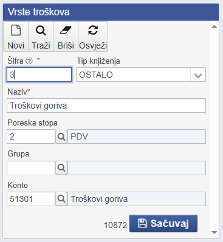
Ovaj konto je analitički konto koji je prije ovog unešen u kontni okvir ( Rad sa kontnim okvirom ).
Pošto imamo unešenu fakturu za gorivo, hajde da napravimo šemu knjiženja koja bi obuhvatila sve stavke knjiženja za fakture za gorivo. Ali ne samo to. Cilj nam je da napravimo šemu knjiženja za sve fakture koje knjižimo koristeći Dokument 20 – Trošak, odnosno fakture koje nazivamo “Faktura troškova”.
Šeme za knjiženje kreiramo klikom na link Finansije i u padajućem meniju na Šema knjiženja.
Na lijevoj strani ćemo u polje Dokument unijeti dokument 20 – Trošak, u Vrsta knjiženja ćemo, u našem slučaju, izabrati UF – Ulazne fakture ( Kreiranje vrsta knjiženja ).
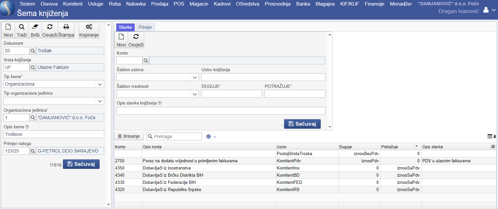
Tip šeme i Opis šeme biramo u skladu sa našim postavkama aplikacije i načinom rada. Iako kompanija iz primjera ima samo jednu organizacionu cjelinu, mi smo se odlučili je vodimo kao organizacionu jedinicu, za slučaj da kompanija osnuje drugu organizacionu jedinicu. U polje Opis šeme upisaćemo Troškovi. Zatim ćemo snimiti kostur šeme knjiženja na dugme Sačuvaj.
Nakon snimanja ćemo u polju Primjer naloga pronaći našu fakturu za nabavku goriva i izabrati je, tako da možemo da pratimo, kada budemo dodavali određena pravila u šemi, kako će izgledati stvarno knjiženje. Naime, desna strana ove forme sadrži dva taba Stavke i Primjer. U tabu Stavke ćemo unositi pravila a klikom na tab Primjer ćemo gledati kako se naša pravila odnose prema fakturi koju smo uzeli za primjer.
Hajde sada da kreiramo pravila. Za kreiranje pravila imamo formu od četiri polja: Konto, Šablon uslova, Šablon vrijednosti i Opis stavke knjiženja. Kreiranje pravila je osmišljeno na jednostavan i intuitivan način, samo je potrebno voditi računa da polja Duguje i Potražuje ne mogu biti istovremeno popunjena (što program automatski radi) već u jedno polje moramo upisati 0. To je jedno od pravila dvojnog knjigovodstva i ako ostavimo oba polja popunjena, Sinergis će nas upozoriti na grešku.
Primjer šeme za knjiženje koji kreiramo odnosi se na Republiku Srpsku i njen kontni okvir za privredna društva, druga pravna lica i preduzetnike. Ali princip je univerzalni.
Pravila koja napravite i snimite, biće prikazana pri dnu lijeve strane ekrana.
Knjiženje fakture za gorivo se u Republici Srpskoj vrši na sledeći način. Zadužuje se trošak goriva bez PDV-a, zadužuje se i vrijednost poreza na dodatnu vrijednost u ulaznoj fakturi, a odobrava se dobavljač (u primjeru je riječ o kompaniji koja je iz Federacije BiH i PDV obveznik).
| Konto Duguje | Konto Potražuje | Opis | Iznos Duguje | Iznos Potražuje |
|---|---|---|---|---|
| 513 | Troškovi goriva i energije | 155,23 | ||
| 270 | PDV u primljenim fakturama | 26,39 | ||
| 433 | Obaveze prema dobavljačima iz Federacije BiH | 181,62 |
Pošto smo mi već unijeli Vrstu troška prilikom unosa fakture, program će znati sa kojim kontom je povezana Vrsta troška, tako da je dovoljno da stavimo uslov PostojiVrstaTroška i izaberemo vrijednost iznosBezPdv, jer se na trošak knjiži samo iznos bez PDV-a u ovom slučaju. Izbrisaćemo iznosBezPdv u polju Potražuje i tu ćemo upisati 0. Na ovaj način smo obuhvatili sve fakture troškova u koje prilikom unosa unesemo Vrstu troška. Program će za svaku ovakvu fakturu kreirati knjiženje iznosa bez PDV-a na dugovnoj strani i upisati konto naveden u VrstiTroška.
Pošto su u pitanju kompanije koje su obveznici poreza na dodatu vrijednost, izabraćemo i to pravilo, a to je da je komintent od koga vršimo nabavku PDV obveznik (KomintentPdv) i vrijednost koju će program da upiše će biti jednaka iznosu PDV-a u fakturi (iznosPdv). Takođe, moramo izbrisati iznosPdv na potražnoj strani i tu upisati vrijednost 0. Konto koje će program zaduživati upisaćemo u polje Konto jer za ovo polje nemamo Vrstu troška upisanu. Ali program zna koji je iznos PDV-a u ovoj fakturi, pa nam je dovoljno samo da odredimo konto i stranu knjiženja.
Na kraju nam je ostao dobavljač. Potrebno je da zaknjižimo obavezu prema njemu a sad je u pitanju iznos sa PDV-om. Međutim, ovdje moramo biti jako oprezni.
U našem primjeru, dobavljač je iz Federacije BiH. Ako izaberemo samo KomintentFED i izaberemo konto 4330, i snimimo i to pravilo, naša faktura će biti ispravno proknjižena.
Hajde da to provjerimo. Pod uslovom da nam je i dalje u lijevom donjem uglu popunjeno polje primjer naloga 123/25 (što znači da je to aktivan primjer fakture), kliknimo na vrhu desne strane na tab Primjer. Ako smo sve dobro uradili, trebali bi vidjeti nešto ovako:
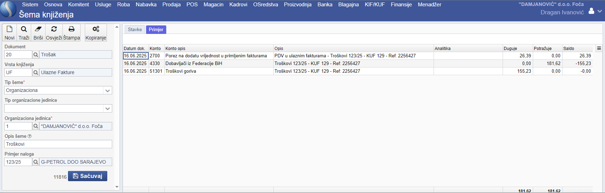
Ako provjerimo red po red, vidjećemo da su naša knjiženja ispravna.
Međutim, da li smo ovom šemom obuhvatili sve hipotetičke mogućnosti Fakture troškova? Naravno da nismo.
Šta će se desiti ako električnu energiju nabavljamo od dobavljača iz Republike Srpske? Program neće upisati ništa na strani obaveze prema dobavljaču jer nijedan od gore navedena tri uslova ne pronalazi takav scenario.
Zato moramo dodati i taj scenario. Dodaćemo još jedan red za dobavljače iz Republike Srpske i konto 432, a zatim i red za dobavljače iz Brčko Distrikta ali i red za ino dobavljače, sa odgovarajućim kontima (434 i 435). Time smo obuhvatili sve osim povezanih lica. Ali upravo to želimo za sada.
Važno naglasiti da šeme knjiženja nisu nepromjenjive i da u slučaju da kompanija koju vodimo kroz Sinergis u budućnosti ima povezana lica, mi to pravilo možemo dodati u postojeću šemu.
Sada, kada za primjer uzmemo fakturu dobavljača iz Republike Srpske, vidjećemo da su i ta knjiženja ispravna. Pa ako uzmemo za primjer i fakture troškova dobavljače iz Brčko Distrikta i inostranstva, sve bi trebalo da je ispravno. Na ovaj način smo uspješno napravili šemu knjiženja za Fakturu troškova.
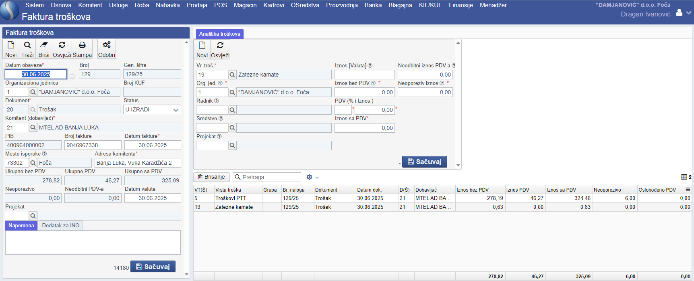
Problem: Ovo gore mi NE RADI u slučajevima kad Faktura troškova sadrži više različitih troškova u analitici a koji zahtijevaju različita konta. Npr. faktura M:tel-a. Na fakturi ima i zatezna kamata (knjiži se na poseban konto zbog poreskog bilansa jer je neprihvatljiv trošak) i troškovi telefona. Gore navedena šema knjiženja, šta god da uradim, uvijek koristi konto prvog unešenog troška a sabira vrijednosti svih troškova u taj trošak. Pa knjiženje ovog primjera izgleda ovako: Dakle, sabrao mi je u zatezne kamate i troškove PTT-a a obje analitike troškova imaju zasebne vrste troška.
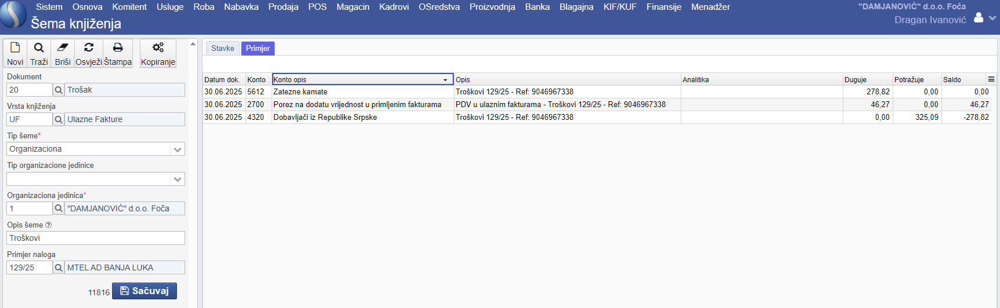
Šema za knjiženje fakture nabavke robe (Prijem/Kalkulacija) (ulaz)
Ukoliko pravno lice koje kome vodimo knjigovodstvo ima robno poslovanje, fakture kojima nam fakturiše robu, ne možemo evidentirati po šablonu za unos Fakture Troškova. Zato je u Sinergisu, za ovakve fakture kreiran poseban dokument: 6 – Kalkulacija.
Kada napravimo šemu knjiženja za ovaj dokument, ona neće imati efekta na dokument
20 – Trošak, niti će šema knjiženja za dokument20 – Trošakimati efekta na ovaj dokument. Ovo je važno razumjeti i imati u vidu da se za svaki dokument (sa kojim radimo) treba osmisliti zasebna šema knjiženja.
Najjednostavniji oblik knjiženja ulaznih faktura robe bi izgledao ovako:
| Konto Duguje | Konto Potražuje | Opis | Iznos Duguje | Iznos Potražuje |
|---|---|---|---|---|
| 131 | Roba u skladištu | 155,23 | ||
| 270 | PDV u primljenim fakturama | 26,39 | ||
| 433 | Obaveze prema dobavljačima iz Federacije BiH | 181,62 |
Postoji više načina zaduživanja robe, više načina vođenja robnog knjigovodstva ali za ovaj primjer uzećemo najjednostavniji slučaj bez obračuna nabavke robe, zavisnih troškova nabavke i sl.
Unošenje faktura kojima nabavljamo robu se vrši iz menija Nabavke i podmenija Prijem/Kalkulacija.
U ovom primjeru ćemo da vidimo kako bi izgledala šema knjiženja za nabavku drvnih sortimenata, odnosno trupaca jele i smrče u kubnim metrima.
Dakle, na lijevoj strani forme za unos fakture smo unijeli osnovne podatke o fakturi (datum, dobavljača, broj fakture). Ostalo nam je program popunio osim dijela sa iznosima koje će sam program popuniti naknadno kad unesemo robu. Primjećujemo da je sada broj dokumenta 6 – Kalkulacija. Pošto smo unijeli lijevu stranu forme, snimićemo kostur fakture na dugme Sačuvaj.
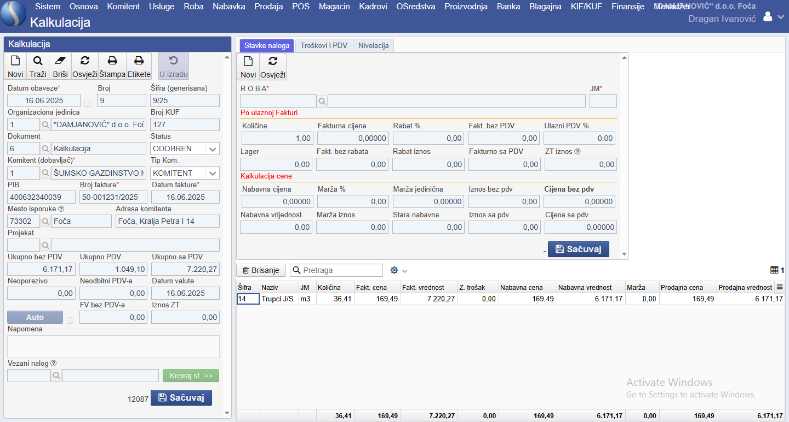
Ako smo uspješno sačuvali kostur fakture (program će nam javiti ako smo ispustili da popunimo neko od obaveznih polja), sada na desnoj strani možemo da unosimo podatke o nabavljenoj robi. Da bi mogli unositi robu, potrebno je da imamo unešenu robu u aplikaciju a što možemo uraditi i na licu mjesta (ukoliko nismo ranije unijeli robu koja se nalazi na fakturi).
U našem primjeru, robu već imamo unešenu u sistem. Da nismo imali, unijeli bi je putem dugmeta Dodaj novi ( Unošenje ulaznih faktura robe )
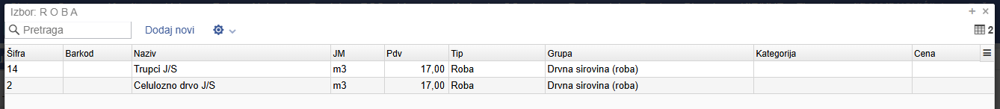
Hajde sada da napravimo šemu za knjiženje ovakve fakture.
Novu šemu za knjiženje ćemo kreirati klikom na link Finansije i u padajućem meniju na Šema knjiženja.
Izabraćemo dokument: 6 – Kalkulacija jer i naša ulazna faktura robe koristi upravo tak dokument. Za vrstu knjiženja stavićemo opet UF – Ulazne fakture (ovo kreirate sami i zavisi od načina kako evidentirate ekonomske promjene i kreirate naloge knjiženja) ( Unošenje vrsta knjiženja ).

Unošenje pravila za šemu knjiženja, isto je kao i za Fakturu Troškova samo vodimo računa da biramo sveobuhvatna pravila kao i odgovarajuće iznose za polja šablona vrijednosti (ostavljajući popunjenu samo dugovnu ili potražnu stranu i upisujući vrijednost 0 u prazno polje.
Šema za knjiženje fakture prodaje robe (Račun/Faktura-Otpremnica) (izlaz)
Prikazali smo kreiranje šema za knjiženje dvije ulazne fakture koje koriste različite dokumente (20 – Trošak i 6 – Kalkulacija). Prikažimo sada kako kreiramo šemu knjiženja za izlaznu fakturu - kada prodajemo robu.
Unošenje faktura prodaje robe, koje kreiramo za potrebe dobavljača, kojima prodajemo odgovarajuću robu vrši se iz menija Prodaja i podmenija Prijem/Račun/Faktura-Otpremnica.
Na lijevoj strani, kao i do sada unosimo osnovne podatke – kostur fakture koju želimo da kreiramo. Primjećujemo da je Sinergis već popunio polje Dokument: 4 – Faktura-Otpremnica. Kada popunimo sve podatke na lijevoj strani i izvršimo snimanje ovakve fakture klikom na dugme Sačuvaj, to će nam omogućiti da izvršimo na lijevoj strani unos robe koju prodajemo po količinama i cijenama ( Unošenje izlaznih faktura robe ).
U našem primjeru mi sada prodajemo trupce, koje smo u primjeru kreiranja šema knjiženja za nabavku robe kupili.
Ako smo ispravno popunili, i snimili, faktura prodaje robe Faktura – Otpremnica izgleda ovako:
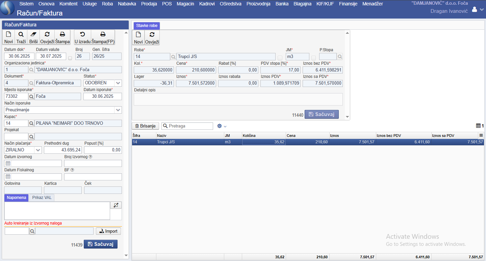
Hajde sada i da za ovaj dokument (4 – Faktura-Otpremnica), kreiramo šemu knjiženja.
Novu šemu za knjiženje ćemo opet kreirati klikom na link Finansije i u padajućem meniju na Šema knjiženja.
Problem: Šemu za ovo takođe ne mogu da napravim da radi. Htio sam da napravim jednostavnu šemu prodaje robe pa da posle napravim šemu prodaje usluga, te da na kraju napravim šemu knjiženja po grupama robe. Probao sam na više načina i to mi ne ide! Ako pokušam u istu šemu da stavim prodaju robe i usluga, dupliraju mi se iznosi. Nisam mogao da provalim kako. Razmišljao sam i da napravim podorganizacionu jedinicu koja se bavi uslužnim djelatnosti pa da za tu jedinicu napravim šeme knjiženja koje se odnose samo na usluge.
Šema za knjiženje izvoda (Izvod banke - Uplata i Izvod banke - Isplata)
Prikazali smo kreiranje šema za knjiženje za ulazne i izlazne fakture. Na sličan način se kreiraju i ostali dokumenti vezani za ovakve fakture (avansne fakture (ulazne i izlazne), knjižna odobrenja i knjižna zaduženja (ulaz i izlaz). Ono što nismo još kreirali je šema za knjiženje bankarskih izvoda. Hajde da i to kreiramo.
Bankarski izvod (ili izvod iz banke) je zvaničan dokument koji banka izdaje klijentu, a koji sadrži spisak svih promjena (priliva i odliva) na bankovnom računu za određeni vremenski period, najčešće dnevno, sedmično ili mjesečno. Pravna lica kod nas dobijaju uglavnom izvode dnevno. Banka im izvode dostavlja u fizičkom obliku, u elektronskom obliku (pdf) i i posebnim oblicima pogodnim za direktno učitavanje u računovodstvene aplikacije. Recimo da bankarski izvod izgleda ovako:
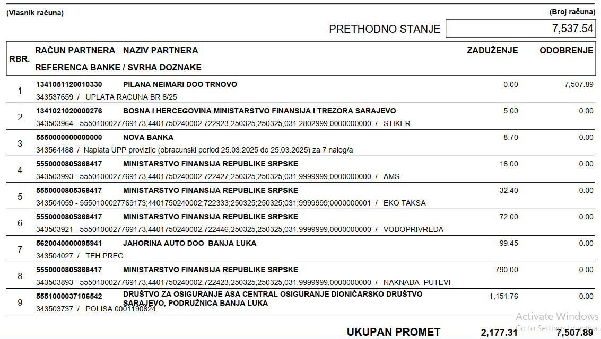
Ručno unošenje, odnosno uvoženje izvoda primljenih od banke, vrši se iz menija Banka i podmenija Izvod banke.
Kad su u pitanju izvodi banke, Sinergis koristi dokument 304 – Izvod banke. Međutim, ovo je samo generalni dokument kad su izvodi banke u pitanju. Zbog lakše manipulacije transakcijama koje se nalaze na izvodu (uplate i isplate), kreirani su zasebni dokumenti: jedan dokument je 305 - Izvod banke – Uplata a drugi je 306 - Izvod banke – Isplata. Ovo omogućava posebno podešavanje šema knjiženja za uplate na račun klijenta (kompanije) a posebno za isplate.
Unešeni izvod u aplikaciji Sinergis izgleda kao na slici ispod. (
Unošenje izvoda banke ).
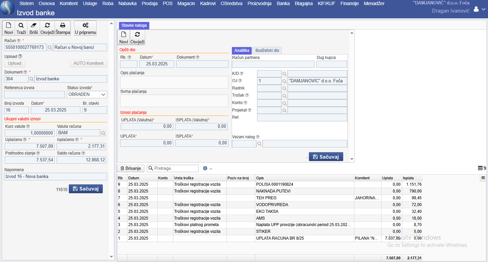
Hajde da napravimo šemu knjiženja za knjiženje izvoda a za primjer ćemo koristiti stavke ovog izvoda.
Šemu za knjiženje ćemo kreirati klikom na link Finansije i u padajućem meniju na Šema knjiženja.
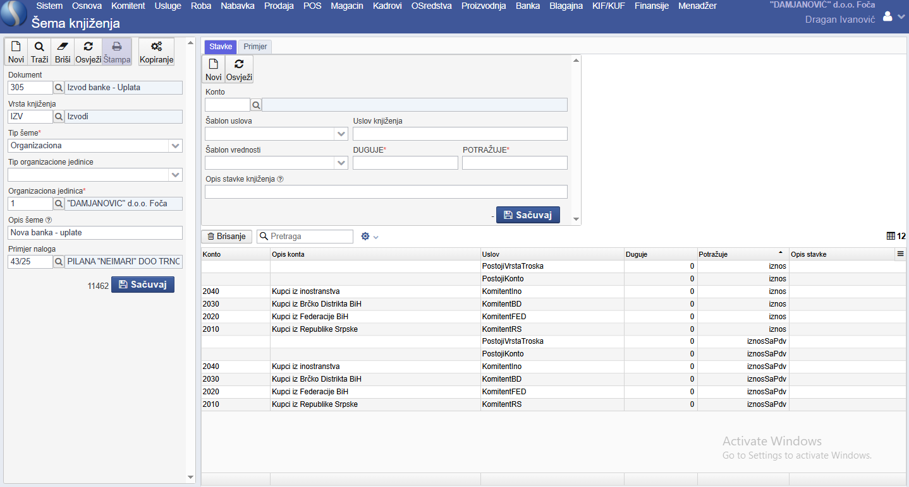
Pošto izvodi rade sa dva dokumenta: 305 - Izvod banke – Uplata i 306 - Izvod banke – Isplata, potrebno je da za oba dokumenta napravimo šemu knjiženja. Dakle, u ovom slučaju pravimo zasebne šeme knjiženja za uplate i za isplate. Slika iznad prikazuje primjer šeme knjiženja za uplate. Slika ispod prikazuje primjer šeme knjiženja za isplate.
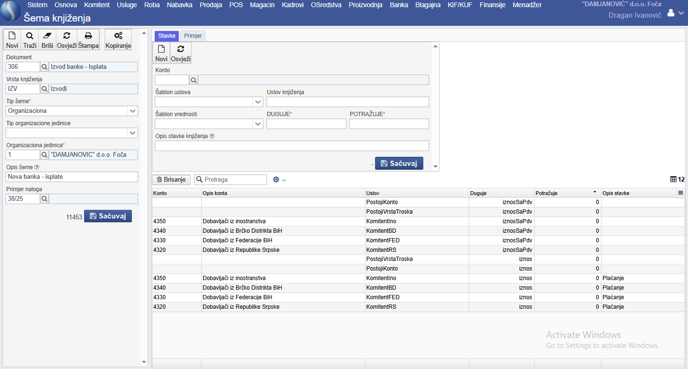
Problem: ove šeme knjiženja generalno rade u mom slučaju ali nisu dobre za uputstvo (ili mi treba pojašanje). Prvobitno sam kreirao samo šeme gdje su vrijednosti bile „iznos“. I te šeme rade za ručni unos izvoda. Međutim, te šeme ne rade za automatsko uvoženje izvoda. Za izvode koje sam uvezao, bilo mi je potrebno da dodam i „iznosSaPdv“-om. Posle toga i ovi izvodi rade. Probao sam sa dvije banke i ista mi je situacija. Posle sam opet isprobao da unesem ručno neki izvod (da vidim da li je došlo do dupliranja jer sad imam i iznos i iznosSaPdv-om uz iste uslove), i sve je u redu. Nema dupliranja. Dakle sve radi ali mi treba potvrda ovoga za uputstvo.